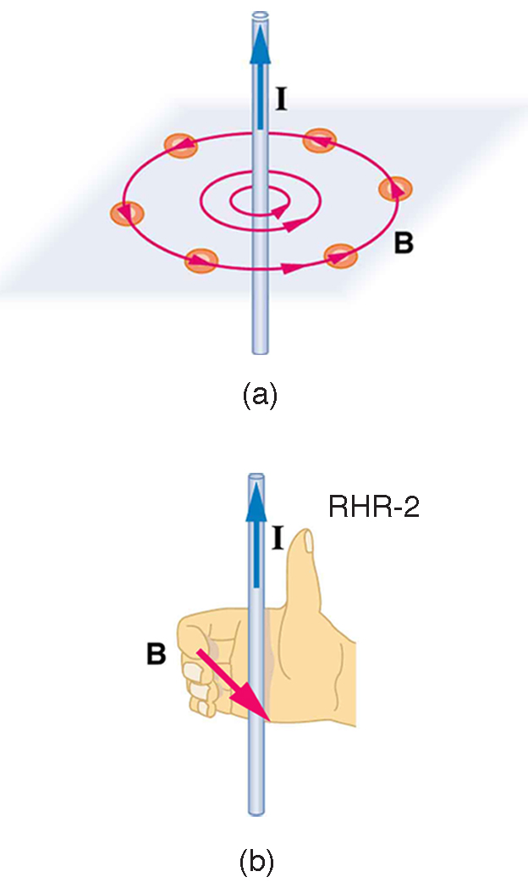
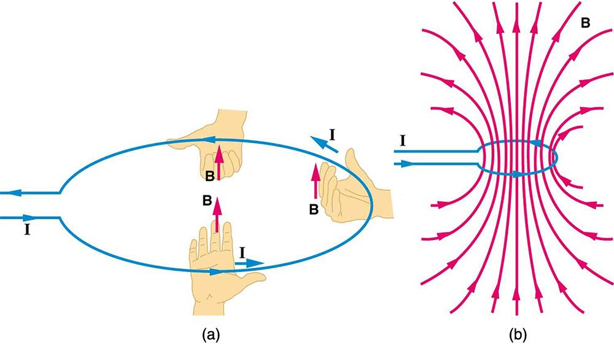

22.9 Magnetic Fields Produced by Currents: Ampere’s Law
Learning Objectives
By the end of this section, you will be able to:
Calculate current that produces a magnetic field.
Use the right hand rule 2 to determine the direction of current or the direction of magnetic field loops.
How much current is needed to produce a significant magnetic field, perhaps as strong as the Earth’s field? Surveyors will tell you that overhead electric power lines create magnetic fields that interfere with their compass readings. Indeed, when Oersted discovered in 1820 that a current in a wire affected a compass needle, he was not dealing with extremely large currents. How does the shape of wires carrying current affect the shape of the magnetic field created? We noted earlier that a current loop created a magnetic field similar to that of a bar magnet, but what about a straight wire or a toroid (doughnut)? How is the direction of a current-created field related to the direction of the current? Answers to these questions are explored in this section, together with a brief discussion of the law governing the fields created by currents.
Magnetic Field Created by a Long Straight Current-Carrying Wire: Right Hand Rule 2
Magnetic fields have both direction and magnitude. As noted before, one way to explore the direction of a magnetic field is with compasses, as shown for a long straight current-carrying wire in the figure. Hall probes can determine the magnitude of the field. The field around a long straight wire is found to be in circular loops. The right hand rule 2 (RHR-2) emerges from this exploration and is valid for any current segment—point the thumb in the direction of the current, and the fingers curl in the direction of the magnetic field loops created by it.

(a) Compasses placed near a long straight current-carrying wire indicate that field lines form circular loops centered on the wire. (b) Right hand rule 2 states that, if the right hand thumb points in the direction of the current, the fingers curl in the direction of the field. This rule is consistent with the field mapped for the long straight wire and is valid for any current segment.
The magnetic field strength (magnitude) produced by a long straight current-carrying wire is found by experiment to be
where is the current, is the shortest distance to the wire, and the constant is the permeability of free space.
is one of the basic constants in nature. We will see later that is related to the speed of light.) Since the wire is very long, the magnitude of the field depends only on distance from the wire , not on position along the wire.
Calculating Current that Produces a Magnetic Field
Find the current in a long straight wire that would produce a magnetic field twice the strength of the Earth’s at a distance of 5.0 cm from the wire.
Strategy
The Earth’s field is about , and so here due to the wire is taken to be . The equation can be used to find
, since all other quantities are known.
Solution
Solving for and entering known values gives
Discussion
So a moderately large current produces a significant magnetic field at a distance of 5.0 cm from a long straight wire. Note that the answer is stated to only two digits, since the Earth’s field is specified to only two digits in this example.
Ampere’s Law and Others
The magnetic field of a long straight wire has more implications than you might at first suspect. Each segment of current produces a magnetic field like that of a long straight wire, and the total field of any shape current is the vector sum of the fields due to each segment. The formal statement of the direction and magnitude of the field due to each segment is called the Biot-Savart law. Integral calculus is needed to sum the field for an arbitrary shape current. This results in a more complete law, called Ampere’s law, which relates magnetic field and current in a general way. Ampere’s law in turn is a part of Maxwell’s equations, which give a complete theory of all electromagnetic phenomena. Considerations of how Maxwell’s equations appear to different observers led to the modern theory of relativity, and the realization that electric and magnetic fields are different manifestations of the same thing. Most of this is beyond the scope of this text in both mathematical level, requiring calculus, and in the amount of space that can be devoted to it. But for the interested student, and particularly for those who continue in physics, engineering, or similar pursuits, delving into these matters further will reveal descriptions of nature that are elegant as well as profound. In this text, we shall keep the general features in mind, such as RHR-2 and the rules for magnetic field lines listed in Magnetic Fields and Magnetic Field Lines, while concentrating on the fields created in certain important situations.
Making Connections: Relativity
Hearing all we do about Einstein, we sometimes get the impression that he invented relativity out of nothing. On the contrary, one of Einstein’s motivations was to solve difficulties in knowing how different observers see magnetic and electric fields.
Magnetic Field Produced by a Current-Carrying Circular Loop
The magnetic field near a current-carrying loop of wire is shown in the figure. Both the direction and the magnitude of the magnetic field produced by a current-carrying loop are complex. RHR-2 can be used to give the direction of the field near the loop, but mapping with compasses and the rules about field lines given in Magnetic Fields and Magnetic Field Lines are needed for more detail. There is a simple formula for the magnetic field strength at the center of a circular loop. It is
where is the radius of the loop. This equation is very similar to that for a straight wire, but it is valid only at the center of a circular loop of wire. The similarity of the equations does indicate that similar field strength can be obtained at the center of a loop. One way to get a larger field is to have loops; then, the field is . Note that the larger the loop, the smaller the field at its center, because the current is farther away.

(a) RHR-2 gives the direction of the magnetic field inside and outside a current-carrying loop. (b) More detailed mapping with compasses or with a Hall probe completes the picture. The field is similar to that of a bar magnet.
Magnetic Field Produced by a Current-Carrying Solenoid
A solenoid is a long coil of wire (with many turns or loops, as opposed to a flat loop). Because of its shape, the field inside a solenoid can be very uniform, and also very strong. The field just outside the coils is nearly zero. the figure shows how the field looks and how its direction is given by RHR-2.
(a) Because of its shape, the field inside a solenoid of length is remarkably uniform in magnitude and direction, as indicated by the straight and uniformly spaced field lines. The field outside the coils is nearly zero. (b) This cutaway shows the magnetic field generated by the current in the solenoid.
The magnetic field inside of a current-carrying solenoid is very uniform in direction and magnitude. Only near the ends does it begin to weaken and change direction. The field outside has similar complexities to flat loops and bar magnets, but the magnetic field strength inside a solenoid is simply
where is the number of loops per unit length of the solenoid , with being the number of loops and the length). Note that is the field strength anywhere in the uniform region of the interior and not just at the center. Large uniform fields spread over a large volume are possible with solenoids, as the example implies.
Calculating Field Strength inside a Solenoid
What is the field inside a 2.00-m-long solenoid that has 2000 loops and carries a 1600-A current?
Strategy
To find the field strength inside a solenoid, we use . First, we note the number of loops per unit length is
Solution
Substituting known values gives
Discussion
This is a large field strength that could be established over a large-diameter solenoid, such as in medical uses of magnetic resonance imaging (MRI). The very large current is an indication that the fields of this strength are not easily achieved, however. Such a large current through 1000 loops squeezed into a meter’s length would produce significant heating. Higher currents can be achieved by using superconducting wires, although this is expensive. There is an upper limit to the current, since the superconducting state is disrupted by very large magnetic fields.
There are interesting variations of the flat coil and solenoid. For example, the toroidal coil used to confine the reactive particles in tokamaks is much like a solenoid bent into a circle. The field inside a toroid is very strong but circular. Charged particles travel in circles, following the field lines, and collide with one another, perhaps inducing fusion. But the charged particles do not cross field lines and escape the toroid. A whole range of coil shapes are used to produce all sorts of magnetic field shapes. Adding ferromagnetic materials produces greater field strengths and can have a significant effect on the shape of the field. Ferromagnetic materials tend to trap magnetic fields (the field lines bend into the ferromagnetic material, leaving weaker fields outside it) and are used as shields for devices that are adversely affected by magnetic fields, including the Earth’s magnetic field.
Generator
Generate electricity with a bar magnet! Discover the physics behind the phenomena by exploring magnets and how you can use them to make a bulb light.
An experimentalist fires a beam of electrons, creating a visible path in the air that can be measured. The beam is fired along a direction parallel to a current-carrying wire, and the electrons travel in a circular path in response to the wire’s magnetic field. Assuming the mass and charge of the electrons is known, what quantities would you need to measure in order to deduce the current in the wire?
the radius of the circular path
the average distance between the electrons and the wire
the velocity of the electrons
two of the above
all of the above
(e)
Electrons starting from rest are accelerated through a potential difference of 240 V and fired into a region of uniform 3.5-mT magnetic field generated by a large solenoid. The electrons are initially moving in the +x-direction upon entering the field, and the field is directed into the page. Determine (a) the radius of the circle in which the electrons will move in this uniform magnetic field and (b) the initial direction of the magnetic force the electrons feel upon entering the uniform field of the solenoid.
In terms of the direction of force, we use the left-hand rule. Pointing your thumb in the +x-direction with the velocity and fingers of the left hand into the page reveals that the magnetic force points down toward the bottom of the page in the –y-direction.
A wire along the y-axis carries current in the +y-direction. In what direction is the magnetic field at a point on the +x-axis near the wire?
away from the wire
vertically upward
into the page
out of the page
(c)
Imagine the xy coordinate plane is the plane of the page. A wire along the z-axis carries current in the +z-direction (out of the page, or
). Draw a diagram of the magnetic field in the vicinity of this wire indicating the direction of the field. Also, describe how the strength of the magnetic field varies according to the distance from the z-axis.
Section Summary
The strength of the magnetic field created by current in a long straight wire is given by
where is the current, is the shortest distance to the wire, and the constant is the permeability of free space.
The direction of the magnetic field created by a long straight wire is given by right hand rule 2 (RHR-2): Point the thumb of the right hand in the direction of current, and the fingers curl in the direction of the magnetic field loops created by it.
The magnetic field created by current following any path is the sum (or integral) of the fields due to segments along the path (magnitude and direction as for a straight wire), resulting in a general relationship between current and field known as Ampere’s law.
The magnetic field strength at the center of a circular loop is given by
where is the radius of the loop. This equation becomes for a flat coil of loops. RHR-2 gives the direction of the field about the loop. A long coil is called a solenoid.
The magnetic field strength inside a solenoid is
where is the number of loops per unit length of the solenoid. The field inside is very uniform in magnitude and direction.
Conceptual Questions
Make a drawing and use RHR-2 to find the direction of the magnetic field of a current loop in a motor (such as in another section). Then show that the direction of the torque on the loop is the same as produced by like poles repelling and unlike poles attracting.
Key terms
right hand rule 2 (RHR-2) a rule to determine the direction of the magnetic field induced by a current-carrying wire: Point the thumb of the right hand in the direction of current, and the fingers curl in the direction of the magnetic field loops
magnetic field strength (magnitude) produced by a long straight current-carrying wire defined as , where is the current, is the shortest distance to the wire, and is the permeability of free space
permeability of free space the measure of the ability of a material, in this case free space, to support a magnetic field; the constant
magnetic field strength at the center of a circular loop defined as where is the radius of the loop
solenoid a thin wire wound into a coil that produces a magnetic field when an electric current is passed through it
magnetic field strength inside a solenoid defined as where is the number of loops per unit length of the solenoid , with being the number of loops and the length)
Biot-Savart law a physical law that describes the magnetic field generated by an electric current in terms of a specific equation
Ampere’s law the physical law that states that the magnetic field around an electric current is proportional to the current; each segment of current produces a magnetic field like that of a long straight wire, and the total field of any shape current is the vector sum of the fields due to each segment
Maxwell’s equations a set of four equations that describe electromagnetic phenomena
![A diagram of a solenoid. The current runs up from the battery on the left side and spirals around with the solenoid wire such that the current runs upward in the front sections of the solenoid and then down the back. An illustration of the right hand rule 2 shows the thumb pointing up in the direction of the current and the fingers curling around in the direction of the magnetic field. A length wise cutaway of the solenoid shows magnetic field lines densely packed and running from the south pole to the north pole, through the solenoid. Lines outside the solenoid are spaced much farther apart and run from the north pole out around the solenoid to the south pole.](Figure_23_09_03a.jpg)